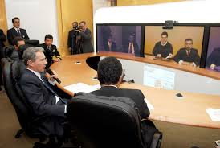
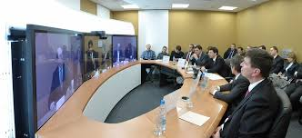

What is Collaborative Telepresence? |
|||||
Collaborative Telepresence refers to a set of technologies which allow a person to feel as if they were present,to give the appearance of being present, or to have an effect, via telerobotics,at a place other than their true location.Telepresence required that the users senses be provided with such stimuli as to give the feeling of being in that other location. Additionally, users may be given the ability to affect the remote location. In this case, the user's position, movements, actions, voice, etc. may be sensed, transmitted and duplicated in the remote location to bring about this effect. Therefore information may be traveling in both directions between the user and the remote location. Telepresence can also be defined as the term used to describe a set of technologies, such as high definition audio, video, and other interactive elements that enable people to feel or appear as if they were present in a location which they are not physically in. Used mainly as a collaboration tool, telepresence is used by vendors, including Cisco to help create a more "in person" meeting experience over a converged network.
Telepresence robotics allows students who are temporaily unable to attend their classes to continue participating remotely. In some level of education we often encounter students who are experiencing unexpected set backs that impacts their ability to attend class. whether it Whether it's due to a car accident, a family emergency, or an illness, the inability to get to class can have a lasting effect on a student's academic success. Often, students experience excessive stress trying to catch up on missed coursework. In some cases, they have no choice other than to withdraw from their classes, putting them a semester or more behind and delaying degree completion &endash; if they return at all. Many institutions are working to retain and graduate their students. As apart of that effort solutions are introduced such as leveraging lecture capture or video conferencing, are expensive and not always suitable for temporary, unexpected situations or for classes where interaction and participation are important. With this in mind, we looked into telepresence robotics as a potential solution for enabling students to attend class remotely.
Telepresence robots are remotely controlled video conferencing devices that are increasingly used in fields such as business and healthcare. As this technology has become more affordable and accessible, higher education institutions have been exploring the capabilities of telepresence robots for distance learning and remote classroom attendance. One example is Michigan State University, which tested the use of Double and Kubi telepresence robots in combination with video conferencing software to let students participate in courses remotely. At University of Colorado Boulder , we recently had the opportunity to conduct a pilot study that brought remote students into the classroom using telepresence robots. Based on our research of telepresence systems, and given the previous experiment's success, we chose to continue with the same system: Kubi, an affordable, easy-to-implement telepresence robot. Kubi is a robotic "neck" that holds a tablet. From their own computers, remote students are able to see, hear, and speak with their instructor and classmates through the tablet's camera and microphone. Remote users can control their viewpoint using their keyboard arrow controls to move the Kubi and the attached tablet up to 320 degrees side-to-side and 90 degrees up and down. This gives students an active, physical presence in the classroom and lets them engage with instructors and peers to fully participate in learning activities.
|  |  |